SORT-MATIC
Sistema SCADA Web para el Control Mecatrónico de Botellas con Visión Artificial
¿Qué es SORT-MATIC?
SORT-MATIC es un sistema de supervisión, control y adquisición de datos (SCADA) basado en tecnología web, diseñado para automatizar y monitorear en tiempo real una línea de clasificación de botellas mediante visión artificial.
El sistema inspecciona cada botella que pasa por la faja transportadora y la clasifica en tres categorías:
Botella íntegra: etiqueta, tapa y nivel de llenado correctos. Sale por el final de la línea.
Rota, sin tapa o sin etiqueta. La expulsa el Servo 1 en la Estación 1.
Aspecto correcto pero con menos del umbral de llenado configurado. La expulsa el Servo 2 en la Estación 2.
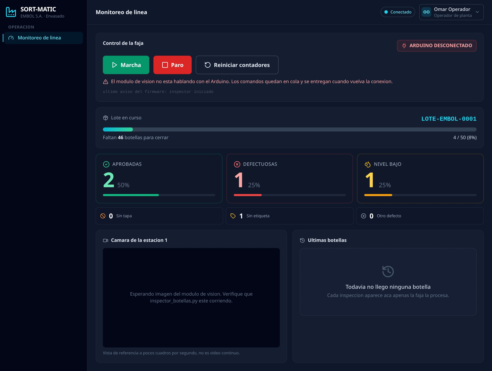
¿Para quién es este manual?
Este manual está dirigido a los tres perfiles de usuario del sistema:
- Administrador Gestión de cuentas y auditoría.
- Supervisor Analíticos, calidad y configuración de la IA.
- Operador Monitoreo de la faja y lectura de contadores.
Flujo de clasificación
Roles de Usuario
SORT-MATIC define tres roles jerárquicos. Cada rol tiene acceso a un conjunto específico de pantallas y funciones.
Administrador de Sistemas
Acceso total al sistema
El rol con mayores privilegios. Es superconjunto de los demás: puede acceder a todas las pantallas del sistema.
Pantallas disponibles
- Monitoreo de línea
- Analíticos y KPIs
- Gestión de Lotes
- Parámetros de inspección
- Galería de Mermas
- Gestión de Usuarios
- Bitácora de Auditoría
Supervisor de Calidad
Análisis y configuración
Accede a los módulos de calidad y puede ajustar los parámetros del modelo de visión artificial, sin gestionar usuarios ni ver la bitácora completa.
Pantallas disponibles
- Monitoreo de línea
- Analíticos y KPIs
- Gestión de Lotes
- Parámetros de inspección
- Galería de Mermas
- Gestión de Usuarios
- Bitácora de Auditoría
Operador de Planta
Operación diaria
Tiene acceso únicamente al panel de operación. Su función es iniciar, detener y monitorear la faja durante el turno de producción.
Pantallas disponibles
- Monitoreo de línea
- Analíticos y KPIs
- Gestión de Lotes
- Parámetros de inspección
- Galería de Mermas
- Gestión de Usuarios
- Bitácora de Auditoría
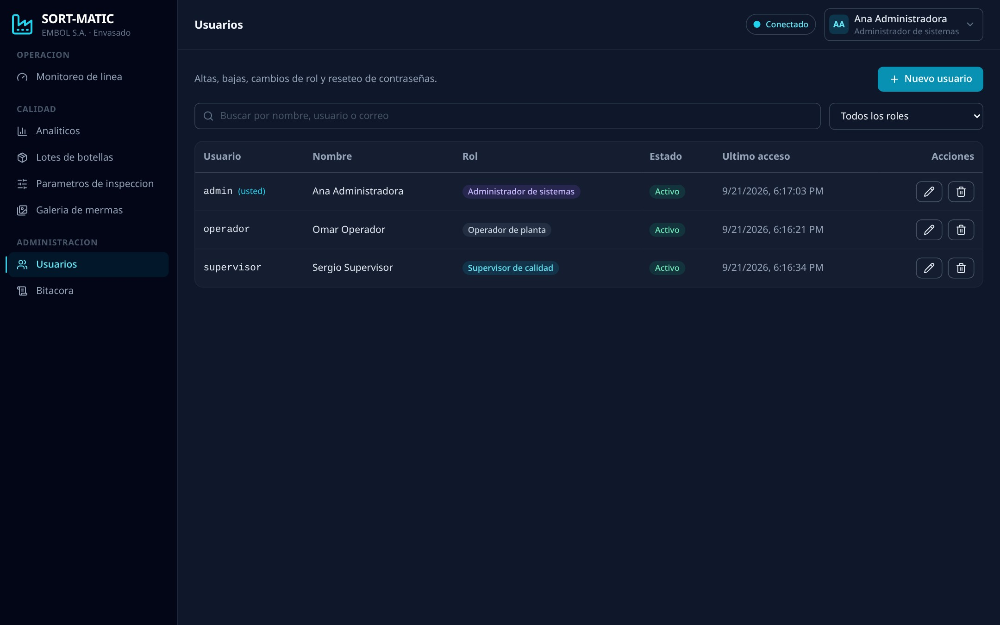
Inicio de Sesión
Cómo acceder al sistema SORT-MATIC desde cualquier navegador de la red industrial.
Acceso al sistema
SORT-MATIC es una aplicación web. Para acceder, abra su navegador y diríjase a la dirección IP del servidor de planta que le proporcionó el administrador.
Se recomienda Google Chrome o Mozilla Firefox. La interfaz no requiere instalación adicional.
Escriba en la barra de direcciones: http://<IP_DEL_SERVIDOR>
En el formulario de inicio de sesión, escriba su nombre de usuario y contraseña asignados por el administrador.
Una vez autenticado, verá únicamente las secciones a las que su rol tiene acceso.
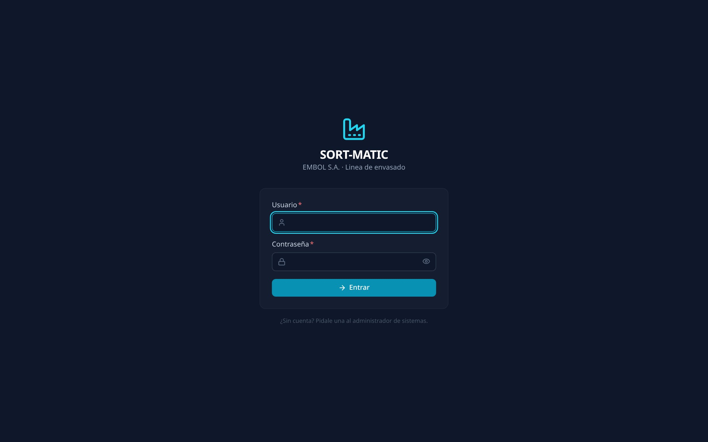
Cambiar contraseña
Puede cambiar su contraseña en cualquier momento desde el menú de usuario, ubicado en la esquina superior derecha de la pantalla:
- Haga clic en su nombre de usuario en la cabecera.
- Seleccione "Cambiar contraseña".
- Ingrese su contraseña actual y la nueva contraseña dos veces.
- Haga clic en "Guardar".
Módulo SCADA – Monitoreo de Línea
Panel principal de operación. Desde aquí el operador controla la marcha y el paro de la faja transportadora y visualiza el estado en tiempo real.
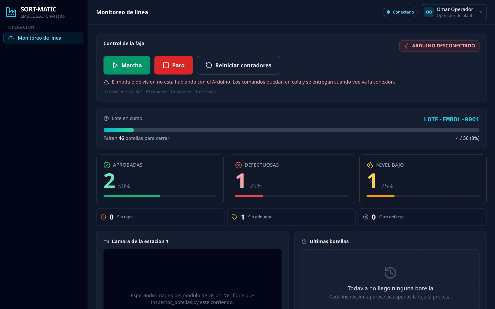
Panel de Control de la Faja
El panel de control es el elemento central de la pantalla de Monitoreo. Contiene los tres botones principales de operación y el indicador de estado del Arduino.
Inicia la faja transportadora. El sistema mostrará una confirmación de seguridad: "¿Arrancar la faja? Asegúrese de que no haya nadie cerca de los servos ni de la cinta." Haga clic en Aceptar para confirmar. El comando llega al Arduino en menos de 1 segundo.
Detiene la faja inmediatamente. Este botón no pide confirmación: un paro de emergencia no puede depender de un diálogo. Úselo siempre que necesite detener la línea.
Pone a cero los contadores del Arduino (aprobadas, defectuosas, nivel bajo). Úselo al iniciar un nuevo turno o lote. El sistema pedirá confirmación antes de ejecutarlo.
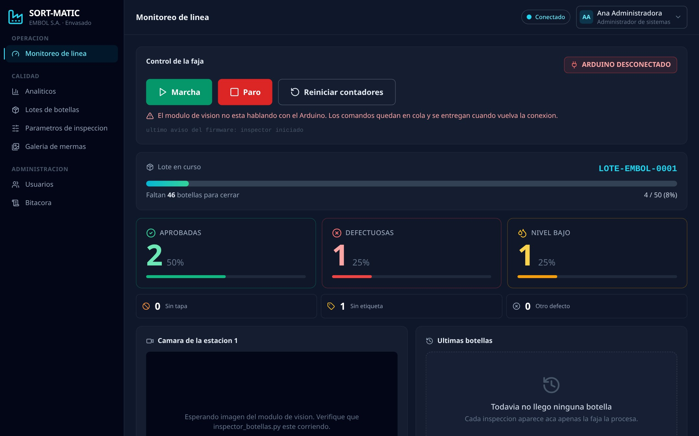
⚠️ Indicador de conexión con el Arduino
En la esquina superior derecha del panel de control verá el semáforo de estado:
- ● FAJA EN MARCHA Punto verde parpadeante — la faja está activa.
- ● FAJA DETENIDA Punto gris — la faja está parada pero el Arduino está conectado.
- ⚡ ARDUINO DESCONECTADO El módulo de visión no comunica con el Arduino. Los comandos quedan en cola y se entregan cuando se restablezca la conexión.
Vista en vivo de la cámara
En el panel de Monitoreo encontrará también la vista en tiempo real de la cámara industrial ubicada sobre la faja. Esta vista muestra:
- La imagen de cada botella en el momento de ser inspeccionada.
- Los cuadros de detección del modelo YOLOv8 (rectángulos de colores).
- El veredicto instantáneo: A (Aprobada), D (Defectuosa) o L (Llenado bajo).

Contadores en Tiempo Real
Los tres contadores principales son los indicadores que el operador monitorea desde la línea durante el turno de producción.
Los tres contadores del lote
Los contadores muestran los acumulados del lote en curso y se actualizan en tiempo real vía WebSocket, sin necesidad de recargar la página.
Cada tarjeta muestra el número absoluto de botellas y su porcentaje sobre el total inspeccionado en el lote.

Desglose de defectos
Debajo de los tres contadores principales, encontrará el desglose detallado de los tipos de defecto detectados:
Feed de eventos recientes
El panel también muestra un registro en tiempo real de los últimos eventos de la línea (botellas inspeccionadas, comandos enviados, alertas). Este feed se actualiza automáticamente.
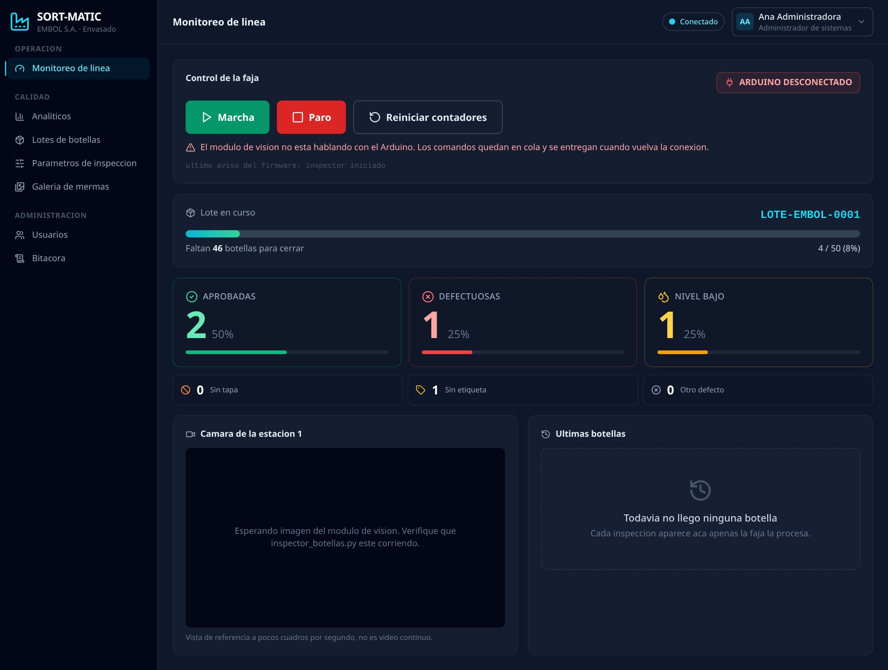
Analíticos y KPIs
Panel de indicadores de rendimiento para el Supervisor de Calidad. Muestra métricas del lote activo, tendencias de producción y análisis de defectos.
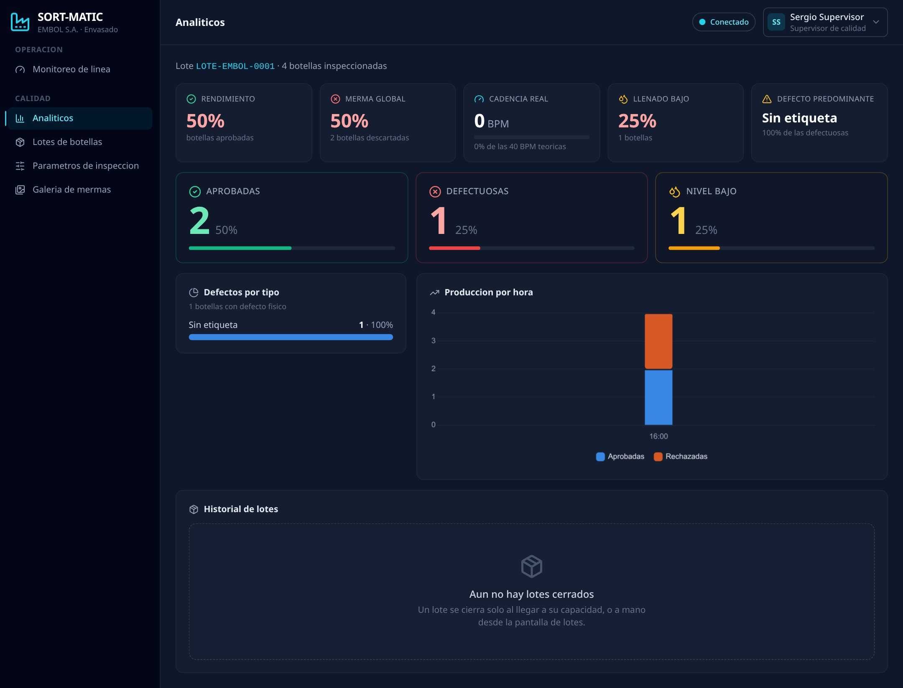
Tarjetas de KPI
En la parte superior del panel de Analíticos encontrará cinco indicadores clave del lote en curso:
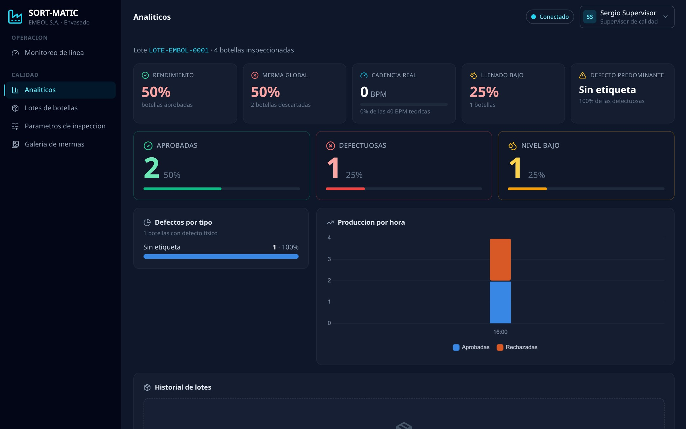
Gráfico de Pareto de Defectos
El gráfico de Pareto muestra los tipos de defecto ordenados de mayor a menor frecuencia. Permite al Supervisor identificar rápidamente cuál es el problema predominante en el lote.
Interpretación:
- La barra más alta indica el defecto más frecuente.
- El porcentaje sobre cada barra indica su proporción sobre el total de defectos.
- Use este gráfico para priorizar las acciones correctivas.

Gráfico de Tendencia (TrendChart)
Muestra la evolución de la producción a lo largo del tiempo: cadencia, tasa de aprobadas y tasa de defectos. Permite detectar tendencias de degradación o mejora.
- Eje X: tiempo (intervalos del lote).
- Línea verde: botellas aprobadas por intervalo.
- Línea roja: botellas defectuosas por intervalo.
- Línea ámbar: botellas con nivel bajo por intervalo.
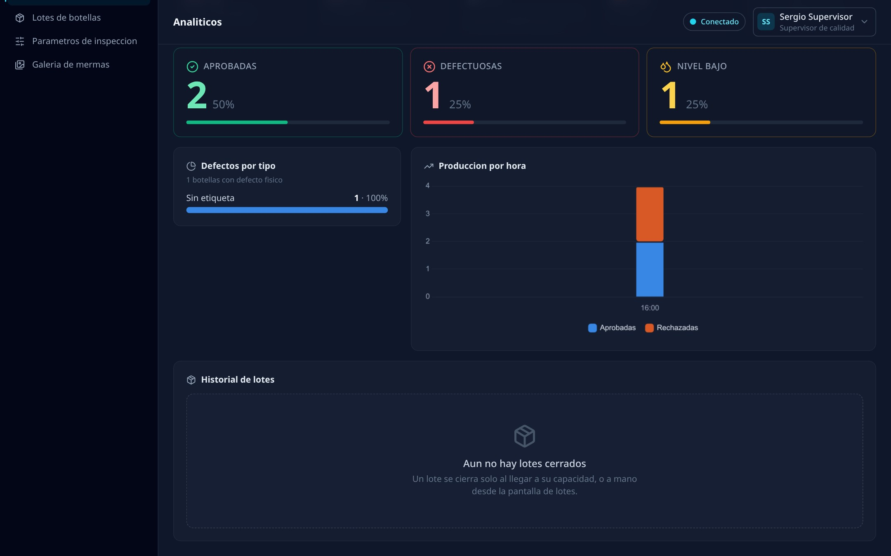
Gestión de Lotes
Administre los lotes de producción: configure el tamaño por defecto, ajuste el lote activo y consulte el historial completo.
¿Qué es un lote?
Un lote es un grupo de botellas inspeccionadas bajo las mismas condiciones de producción. El sistema crea lotes automáticamente según la capacidad configurada. Cuando un lote se completa o se cierra manualmente, el siguiente se abre de inmediato.

Configurar tamaño de lote por defecto
El tamaño por defecto define cuántas botellas tendrán los próximos lotes que se abran. No afecta al lote que está en curso.
Ajustar el lote activo
Si necesita modificar la capacidad del lote que está en curso (por ejemplo, debido a un cambio de turno), puede hacerlo desde la tarjeta "Lote en Curso":
- Modifique el número en el campo de capacidad.
- Haga clic en "Cambiar capacidad".
Cerrar un lote manualmente
Para cerrar el lote activo antes de que alcance su capacidad máxima:
- Haga clic en el botón "Cerrar lote ahora".
- Confirme la acción en el diálogo que aparece, que mostrará el correlativo y el número de botellas producidas.
- El sistema cierra el lote y abre inmediatamente el siguiente.
Galería de Mermas
Registro visual de todas las botellas descartadas. Cada vez que la línea rechaza una botella, el módulo de visión guarda una captura fotográfica con los metadatos de la inspección.
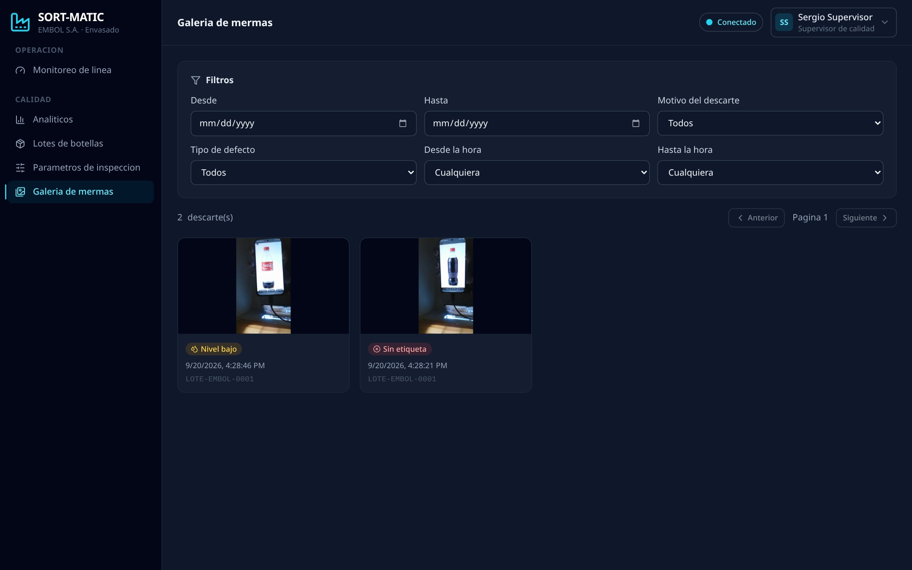
Navegar por la galería
La galería muestra las capturas en formato de cuadrícula. Cada ficha fotográfica incluye:
- Imagen de la botella en el momento del rechazo.
- Badge de motivo: Defecto físico o Nivel bajo.
- Fecha y hora del descarte.
- Correlativo de lote al que pertenece.
Haga clic en cualquier ficha para abrir el modal de detalle.
Modal de detalle de merma
Al hacer clic en una ficha se abre un panel ampliado con la información completa:
- Imagen a tamaño completo.
- Fecha y hora exacta del descarte.
- Número de lote correlativo.
- Motivo del rechazo y tipo de defecto.
- Estación de descarte (Servo 1 o Servo 2).
- Nivel de llenado medido (% de llenado detectado).
- Certeza del modelo de IA (confidence %).
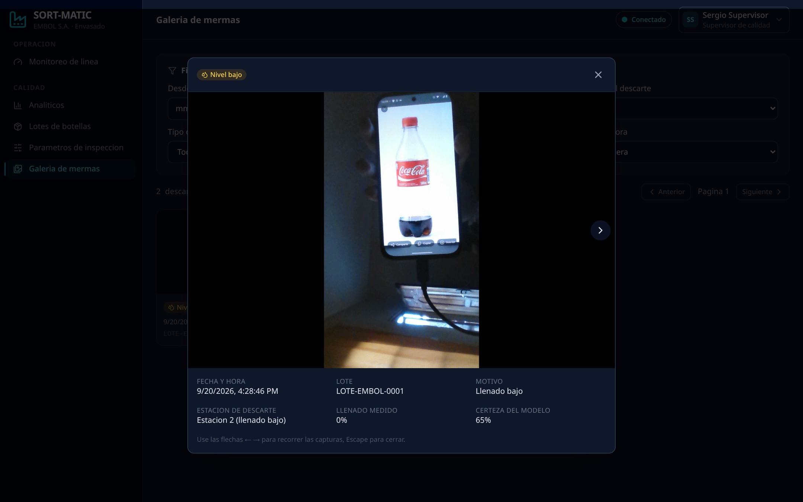
Filtros de búsqueda
Utilice los filtros en la parte superior de la galería para acotar los resultados:
Rango de fechas del descarte.
Franja horaria dentro del día.
Defecto físico o Nivel bajo.
Sin etiqueta / Sin tapa / Otro.

Exportar Datos
Descargue los registros de lotes y mermas en formato PDF o CSV para reportes, auditorías o análisis externo.
Exportar historial de lotes (CSV)
lotes_YYYY-MM-DD.csv se descargará automáticamente.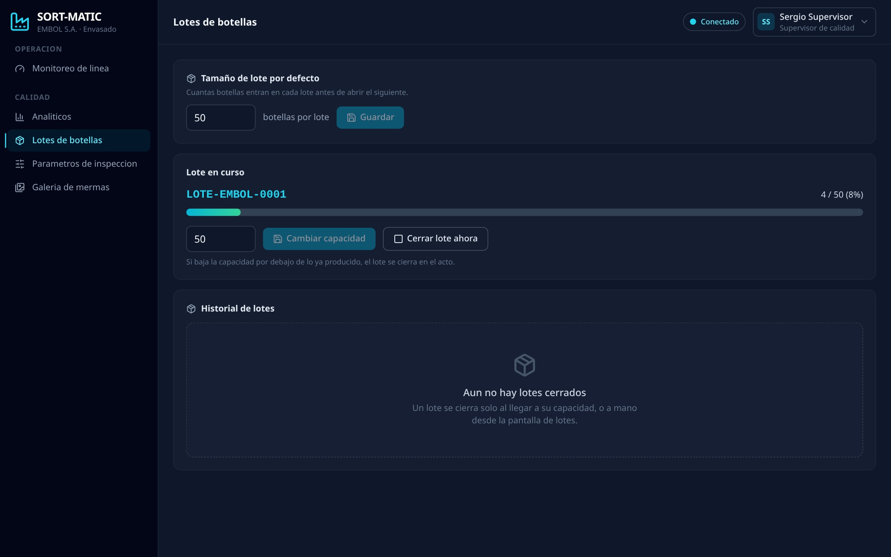
Exportar reporte de mermas (PDF)
Parámetros de Inspección
Configure los umbrales de calidad del modelo de IA y la calibración de la línea. Los cambios se aplican en segundos sin detener la inspección.
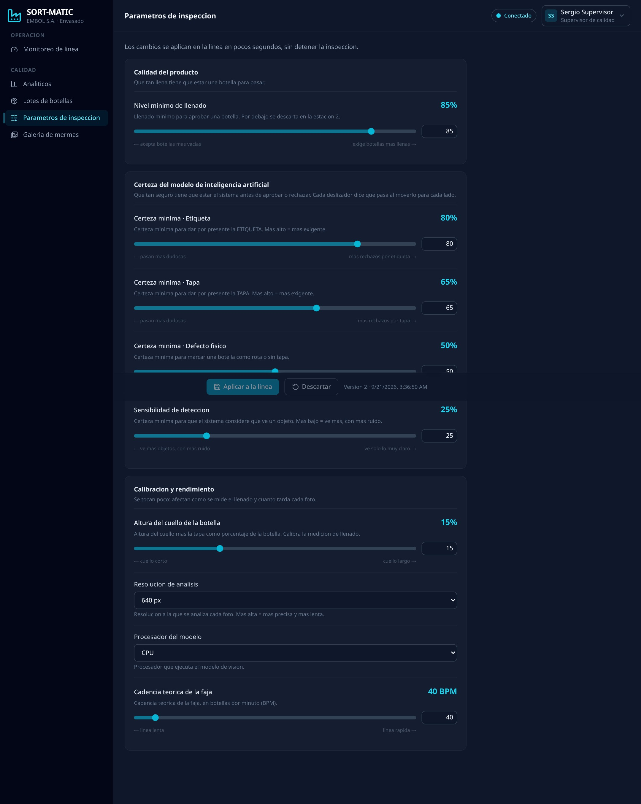
Grupo 1: Calidad del Producto
Define el porcentaje mínimo de llenado que debe tener una botella para ser aprobada. Una botella con nivel medido por debajo de este umbral será descartada como Llenado Bajo (L) en la Estación 2.
Grupo 2: Certeza del Modelo de IA (Confidence Threshold)
Estos deslizadores controlan qué tan seguro debe estar el modelo YOLOv8 antes de tomar una decisión. Cada parámetro funciona de forma independiente.
Si el modelo detecta una etiqueta con una confianza menor a este valor, la botella se marca como defectuosa.
Si el modelo detecta una tapa con confianza menor a este valor, la botella se rechaza como defectuosa.
Confianza mínima para que el modelo clasifique una botella como rota o con defecto físico visible.
Umbral global del detector (conf de YOLOv8). Valores bajos detectan más objetos pero con más falsos positivos; valores altos son más estrictos.
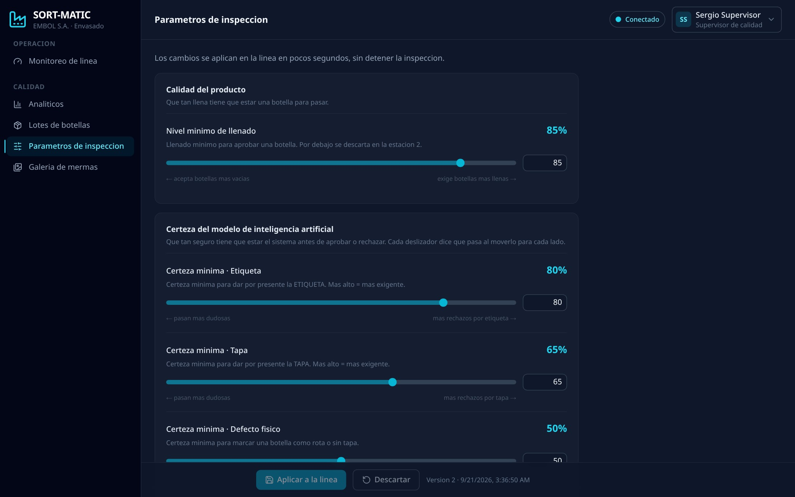
Grupo 3: Calibración y Rendimiento
Fracción de la altura de la botella que corresponde al cuello. Afecta directamente el cálculo del nivel de llenado por geometría. Solo modificar con la supervisión del técnico de visión.
Velocidad teórica máxima de la línea en botellas por minuto. Se usa para calcular el porcentaje de aprovechamiento de la cadencia real.
Tamaño de imagen que se envía al modelo YOLOv8 para inferencia. Mayor resolución = más detalle pero mayor tiempo de procesamiento. Valores: 320, 416, 512, 640, 768, 960, 1280 px.
Define si el modelo corre en CPU o en GPU (CUDA). Si el servidor tiene tarjeta gráfica compatible, seleccione GPU (CUDA 0) para mayor velocidad.
Aplicar los cambios
Todos los cambios en los deslizadores son borradores hasta que haga clic en "Aplicar a la línea". El sistema muestra cuántos parámetros tienen cambios pendientes.
- Los cambios se aplican sin detener la inspección (en caliente).
- Un badge amarillo sin guardar aparece junto al nombre de cada parámetro modificado.
- Use "Descartar" para revertir todos los cambios al último valor guardado.
- La barra inferior fija siempre muestra la versión actual y la fecha del último guardado.
Gestión de Usuarios
El Administrador puede crear, editar y eliminar las cuentas de los operadores y supervisores del sistema.

Crear un nuevo usuario
Editar o eliminar un usuario
En la tabla de usuarios, haga clic en el icono de edición (lápiz) junto al usuario que desea modificar. Puede cambiar su nombre, rol o contraseña.
Bitácora de Auditoría
Registro inmutable de todas las acciones sensibles del sistema: quién hizo qué, cuándo y desde qué dirección IP.
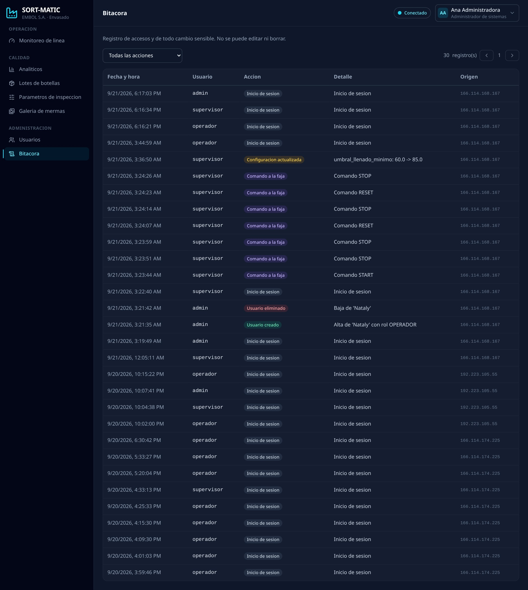
Eventos registrados
La bitácora registra automáticamente las siguientes acciones:
Arquitectura Técnica
Descripción de los componentes del sistema y cómo se comunican entre sí.
Componentes del sistema
Interfaz web accesible desde cualquier navegador de la red. Tailwind CSS para estilos dark mode. Comunicación en tiempo real vía WebSocket.
API REST para CRUD de datos. WebSockets para telemetría en tiempo real. PostgreSQL como base de datos principal.
Captura imágenes con la cámara, ejecuta inferencia con el modelo best.pt de Ultralytics y envía el veredicto (A/D/L) al Arduino por USB.
Controla la faja, los dos servos de expulsión y el LCD. Recibe comandos START/STOP/RESET desde el backend y reporta el estado de la línea.
Flujo de datos en tiempo real
Glosario
Definición de los términos técnicos utilizados en este manual y en la interfaz del sistema.
- Arduino UNO
- Microcontrolador que ejecuta el firmware de la faja transportadora. Controla el motor de la cinta y los dos servos de expulsión.
- BPM (Botellas por Minuto)
- Cadencia de la línea de producción. Indica cuántas botellas pasan por la cámara en un minuto.
- Confidence Threshold (Umbral de Confianza)
- Porcentaje mínimo de certeza que debe tener el modelo de IA para tomar una decisión. Un threshold del 70% significa que el modelo debe estar al menos 70% seguro de su detección.
- Django / Django Channels
- Framework web Python que forma el backend del sistema. Channels es la extensión que añade soporte para WebSockets (comunicación en tiempo real).
- Estación 1
- Primer punto de control de la faja. Aquí se detiene la botella, la cámara la fotografía y el modelo YOLOv8 la clasifica. El Servo 1 expulsa las botellas defectuosas.
- Estación 2
- Segundo punto de control. El Servo 2 expulsa las botellas con nivel de llenado bajo que el modelo ya había identificado en la Estación 1.
- HMI (Human Machine Interface)
- La interfaz gráfica de SORT-MATIC accesible desde el navegador. Permite al operador controlar y monitorear la línea de producción.
- KPI (Key Performance Indicator)
- Indicador clave de rendimiento. En SORT-MATIC: Rendimiento (%), Merma global (%), Cadencia real (BPM), Tasa de llenado bajo (%) y Defecto predominante.
- Lote
- Agrupación de botellas inspeccionadas en una misma corrida de producción. Los lotes se identifican con un número correlativo (ej: LOT-0001).
- Merma
- Botella descartada por la línea de inspección. Puede ser por defecto físico (D) o por nivel de llenado bajo (L).
- Pareto (Gráfico de)
- Diagrama de barras que muestra los tipos de defecto ordenados de mayor a menor frecuencia. Ayuda a identificar el defecto más frecuente para priorizar acciones correctivas.
- React
- Librería JavaScript usada para construir la interfaz web (frontend) de SORT-MATIC.
- ROI (Region of Interest)
- Región de la imagen de la cámara que el sistema analiza. Se configura en
config.jsonpara encuadrar solo la botella en la estación. - SCADA
- Supervisory Control and Data Acquisition. Sistema de supervisión y control industrial en tiempo real. SORT-MATIC es la implementación SCADA web para la línea de botellas.
- Servo
- Actuador mecánico que expulsa las botellas de la faja. El Servo 1 (pin 10) está en la Estación 1 para defectuosas; el Servo 2 (pin 11) en la Estación 2 para nivel bajo.
- WebSocket
- Protocolo de comunicación bidireccional en tiempo real entre el navegador y el servidor. Permite que los contadores y el estado se actualicen automáticamente sin recargar la página.
- YOLOv8 (You Only Look Once v8)
- Modelo de detección de objetos de la empresa Ultralytics. Es el cerebro de la visión artificial de SORT-MATIC, entrenado para detectar etiquetas, tapas, defectos y nivel de llenado de botellas.